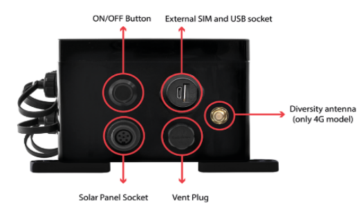
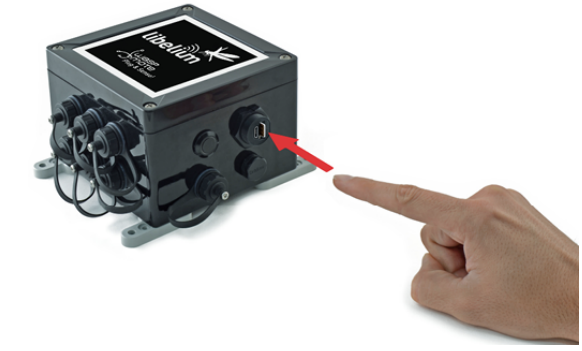
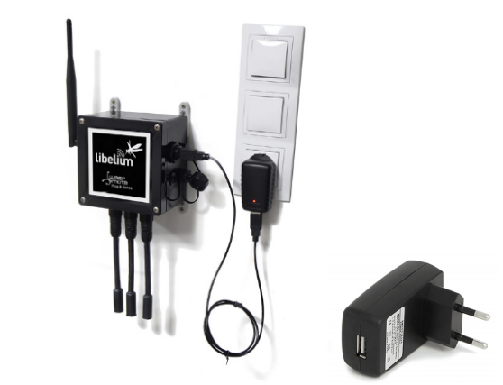

Lắp 2x anten bên trái và bên phải theo chiều của hình bên dưới để thiết bị bắt được sóng LTE 4G tốt
nhất:
- Anten trái vuông gốc với mặt thiết bị
- Anten phải song song với mặt thiết bị
Để kết nối Internet cho thiết bị, cần gắn thiết bị với 1x SIM 4G-Data đã được kích hoạt sẵn gói dữ
liệu. Ví dụ: có thể dùng Sim của Viettel/Vinaphone hoặc Mobiphone đều được. (Thiết bị đã được
thử kết nối thành công với Sim 4G-Data của Viettel).
Cách lắp Sim theo hình bên dưới. Tại khe cắm Sim có tích hợp chung với đầu cắm USB theo tiêu
chuẩn:
- nano-SIM card
- micro-USB (type B)

Do thiết bị đã được sặc đầy nguồn (pin tích hợp bên trong) nên không cần gắn dây nguồn. Cách
bật/tắt nút nguồn như hình bên dưới. Chú ý: giúp tắt nút này khi test xong.

Khi nhấn nút nguồn, sẽ có đèn led nhấp nháy khá nhanh, thiết bị sẽ tự hoạt động theo cấu hình mặc
định bên trong!
Trường hợp nếu nguồn sắp hết, có thể dùng dây cáp có đầu micro-USB gắn thiết bị, đầu còn lại gắn vào cục sặc USB tiêu
chuẩn hoặc có thể gắn trực tiếp vào máy tính qua cổng USB bình thường để sạc pin cho thiết bị. Lúc này KHÔNG cần bật
nút nguồn trên thiết bị, pin bên trong sẽ tự động được sạc, như hình ví dụ bên dưới:

Thiết bị này có tên là Smart Water Xtreme, dùng trong nông nghiệp, để gắn với các cảm biến chất lượng nước (ví dụ trong ao nuôi tôm/cá) để đo các giá trị như Nhiệt độ nước, pH, Oxy hoà tan,..v.v. và gửi giá trị đo được đi Internet thông qua SIM 4G.